區網版設定 / 主機電腦
區網SQL Server 防火牆及組態設定
請依照下列步驟『設定組態』及『使防火牆允許SQL Server程式使用』。
以下範例環境為 Windows 11 作業系統與 SQL Express 2022 為範例。
STEP1：SQL Server 組態設定
一、搜尋「SQL Server 2022 設定管理員」，開啟「SQL Server 設定管理員」應用程式。
* 若SQL Server為2019版本，請搜尋「SQL Server 2019 設定管理員」。
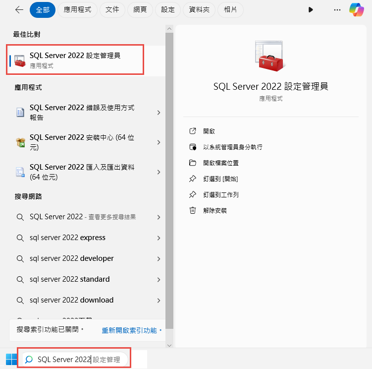
二、確認 SQL Server 及 SQL Server Browser 服務已開啟。
(1) 點選『SQL Server 服務』。
(2) 雙擊『SQL Server (XXXX)』；『XXXX』為您安裝之執行個體名稱。
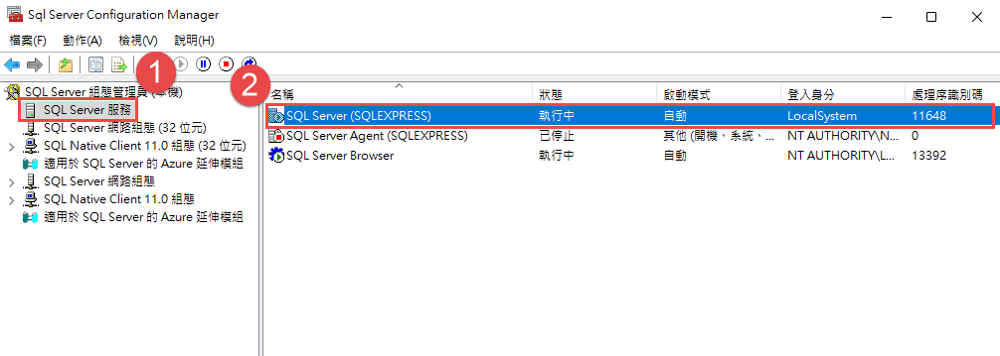
(3) 確認登入身份為『本機系統』。
(4) 確認服務狀態為『執行中』。
(5) 點選『確定』儲存設定。
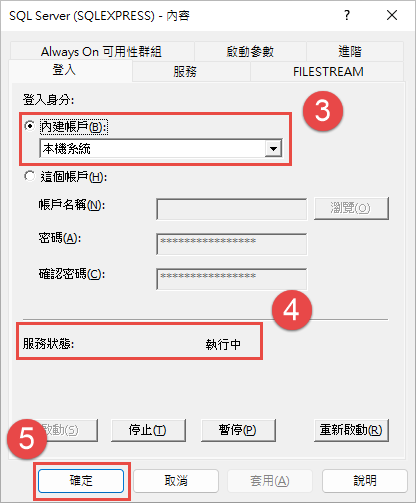
(6) 雙擊『SQL Server Browser』。
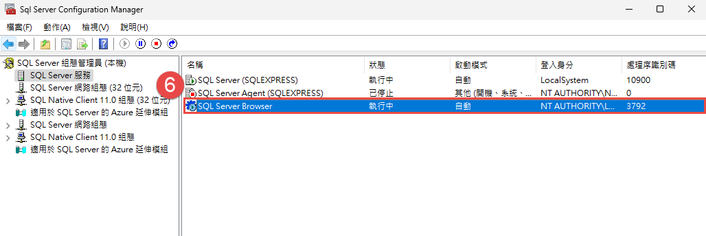
(7) 點選『服務』。
(8) 確認啟動模式為『自動』。
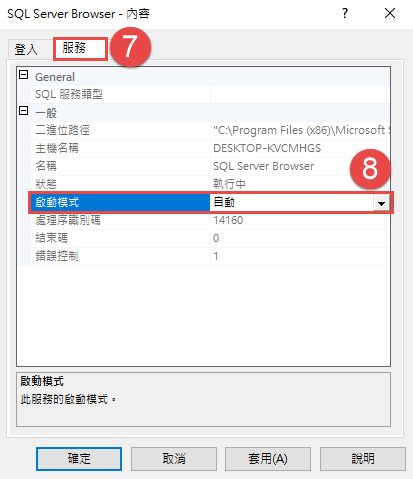
(9) 點選『登入』。
(10) 確認服務狀態為『執行中』。
(11) 若服務狀態為『已停止』，點選『啟動』。
(12) 點選『確定』儲存設定。
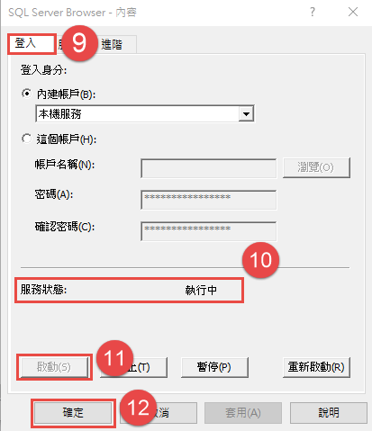
三、確認 SQL Server 通訊協定已開啟。
(1) 點選『SQL Server 網路組態』。
(2) 點選『XXXX 的通訊協定』；『XXXX』為您安裝之執行個體名稱。
(3) 啟用所有通訊協定(若狀態為『已停用』，請點擊滑鼠右鍵選擇『啟用』)。
(4) 確定狀態為『已啟用』後， 請務必先重新啟動電腦 ，再繼續下一個步驟。
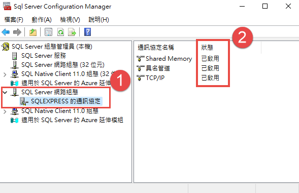
STEP2：查詢路徑
一、搜尋『控制台』，開啟『控制台』應用程式。
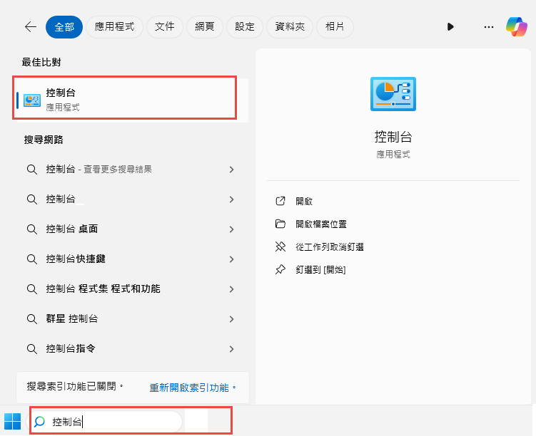
二、將檢視方式選擇『大圖式』，點選『Windows 工具』。
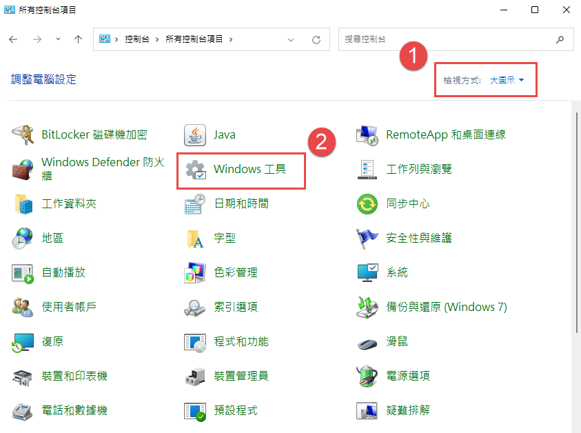
三、請選擇『服務』。
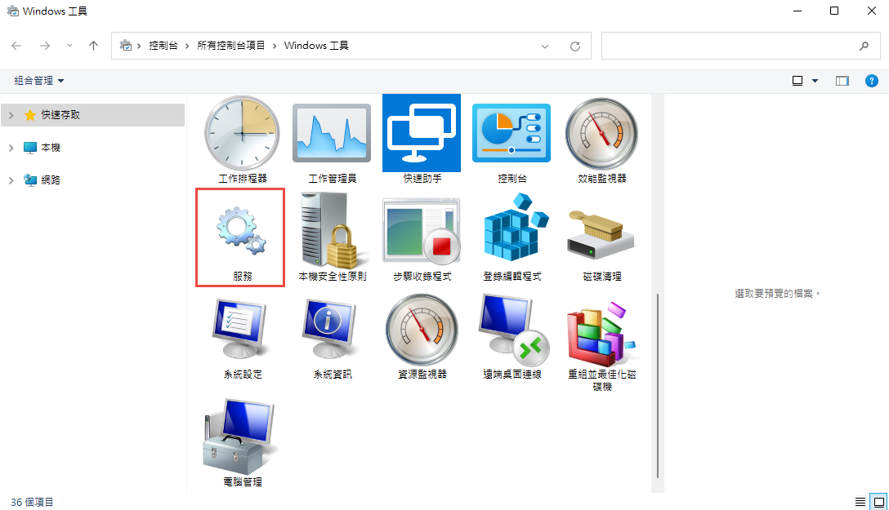
四、點選『SQL Server(XXXX)』右鍵，選擇『內容』。 (XXXX)為您的執行個體名稱。
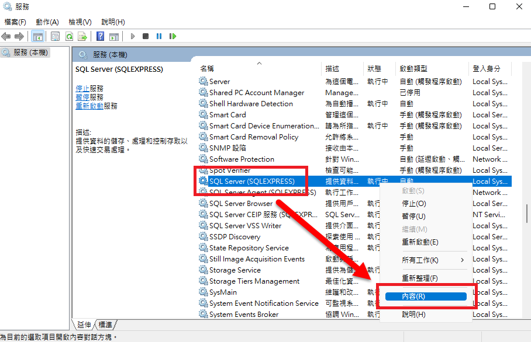
五、在『可執行檔所在路徑』，記下引號內的路徑至『Binn』， 如：執行檔所在路徑為
「
C:\Program Files\Microsoft SQL Server\MSSQL16.SQLEXPRESS1\MSSQL\Binn\sqlservr.exe」，
※ 建議使用記事本將路徑記錄下來，以利後續步驟使用。
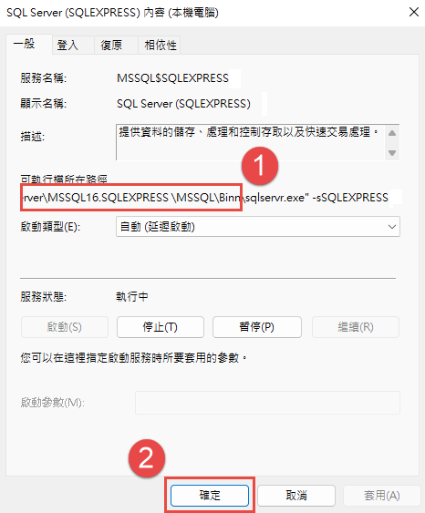
六、請回到『服務』，點選『SQL Server Browser』右鍵，選擇『內容』。
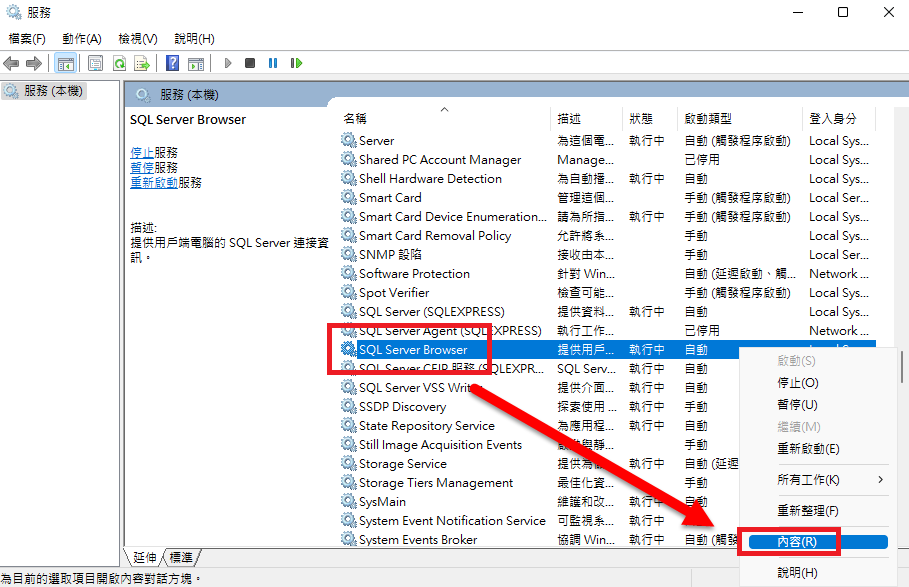
七、請至『執行檔所在路徑』，記下引號內的路徑至『Shared』， 如：執行檔所在路徑為
「
C:\Program Files(x86)\Microsoft SQL Server\90\Shared\sqlbrowser.exe」，
※ 建議使用記事本將路徑記錄下來，以利後續步驟使用。
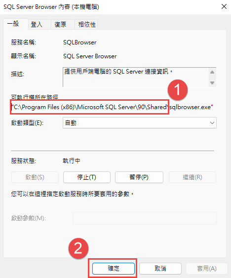
STEP3：防火牆設定
一、搜尋『控制台』，開啟『控制台』應用程式。
二、將檢視方式選擇『大圖式』，點選『Windows Defender 防火牆』。
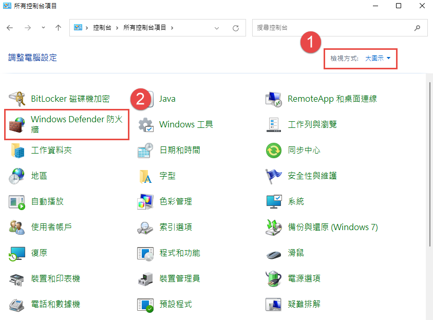
三、點選『Windows Defender 防火牆』內的『允許應用程式或功能通過 Windows Defender 防火牆』。
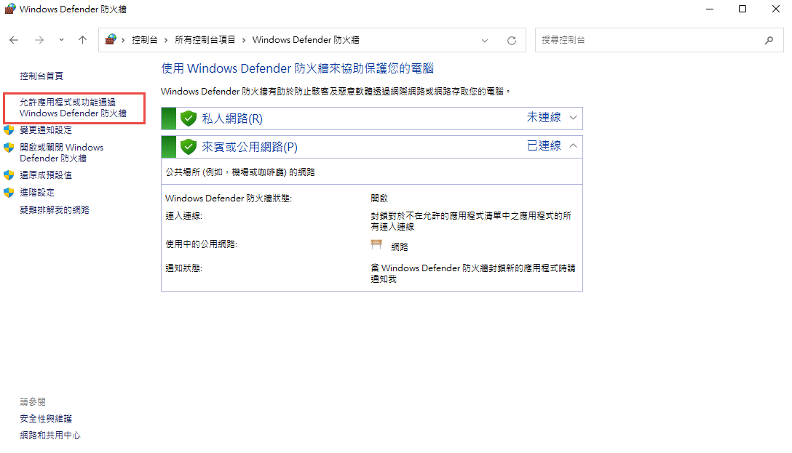
四、點選『變更設定』→『允許其他應用程式』，開啟『新增應用程式』後，請點選『瀏覽』。
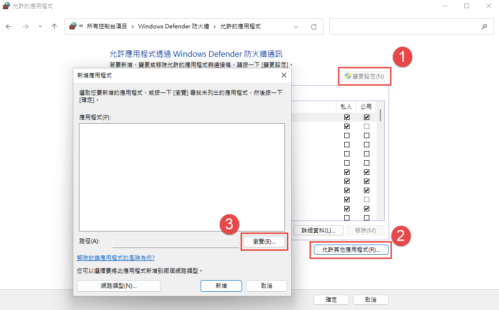
五、請依步驟『STEP2』查詢路徑的第5點所記下的路徑位址貼上並搜尋，選擇『sqlservr.exe』後點選『開啟』。
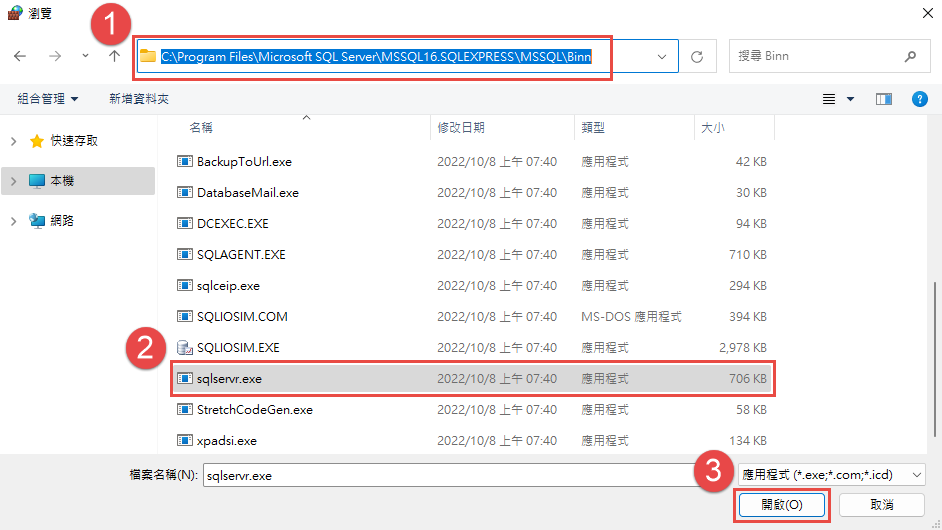
六、開啟後將會回到『新增應用程式』，請選擇『SQL Server Windows NT』，點選『新增』。
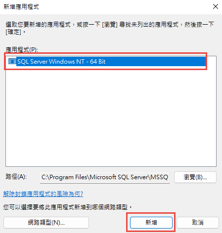
七、請依步驟『STEP2』查詢路徑的第7點所記下的路徑位址貼上並搜尋，選擇『sqlbrowser.exe』後點選『開啟』。
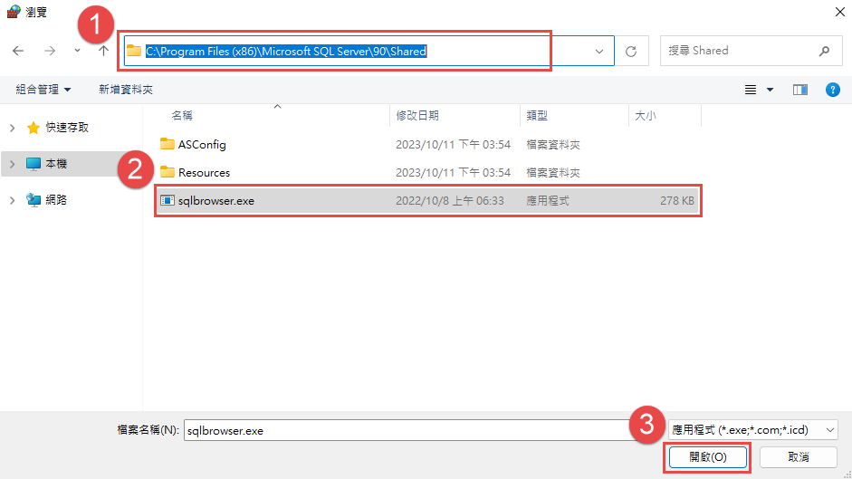
八、開啟後將會回到『新增程式』，請選擇『SQL Browser Service EXE』，點選『新增』。
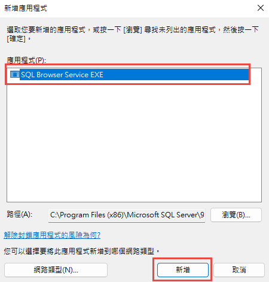
九、新增完成後，請至『允許程式通過Windows防火牆通訊』內，勾選『SQL Server Windows NT』、『SQL Browser Service EXE』。
請依照個人電腦的環境設定進行勾選，並點選『確認』即可。
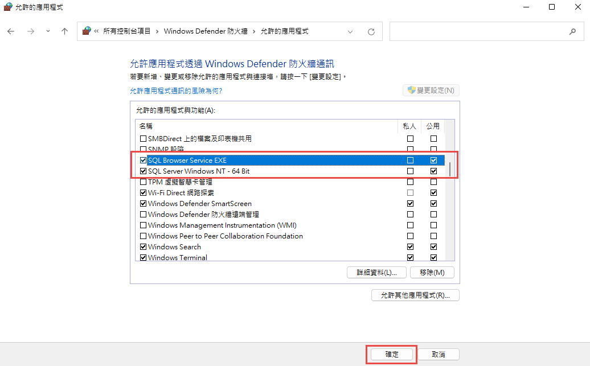